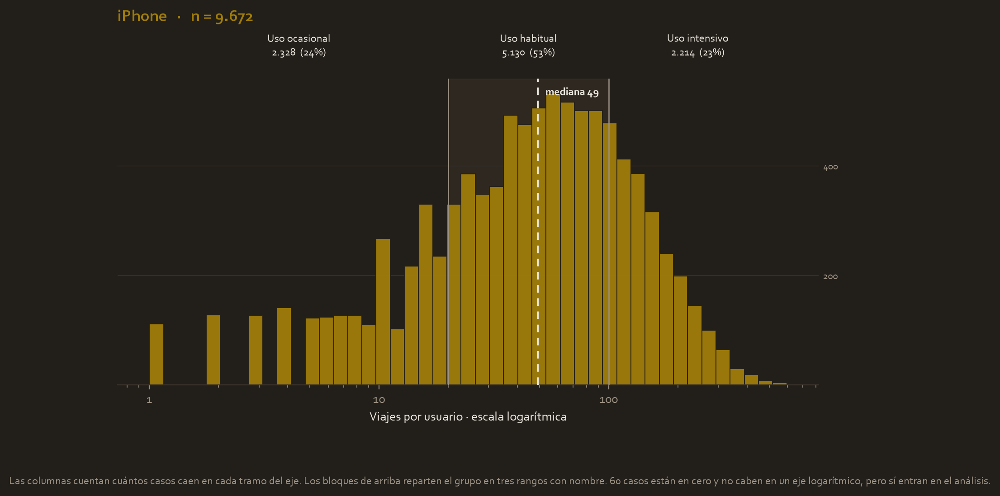
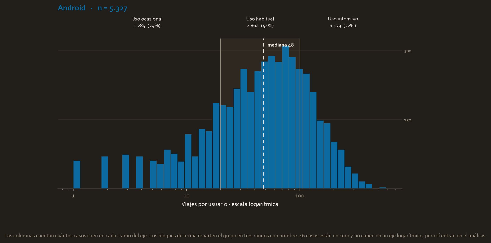
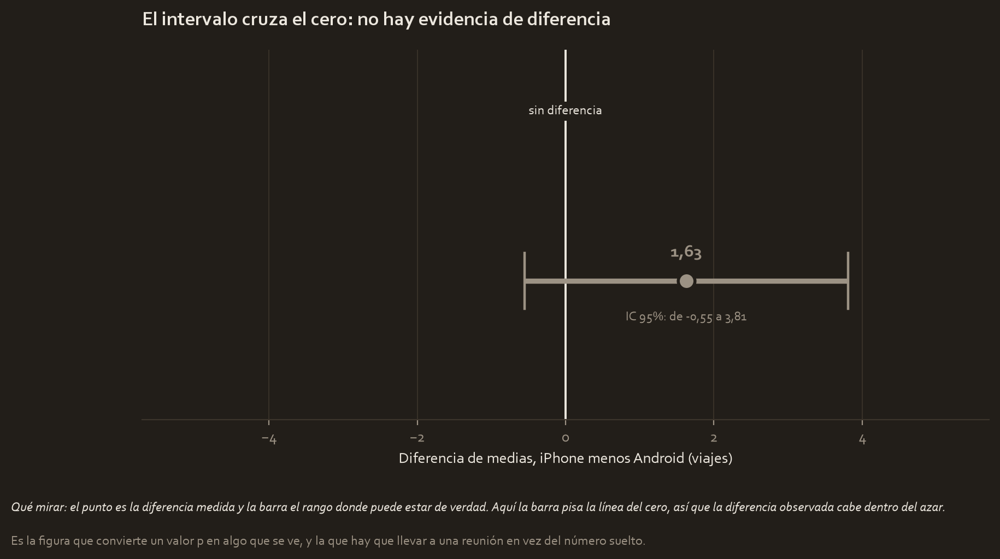

El encargo
Trabajas en el equipo de datos de Waze, la aplicación de navegación. El problema de negocio que ocupa a la empresa es el abandono de usuarios, o churn: gente que instala la app y deja de usarla.
El proyecto original es sobre todo un trabajo de predicción, con regresión logística, Random Forest y XGBoost. Pero en medio de todo eso hay una sola prueba de hipótesis formal, y es la que se examina aquí: ¿influye el tipo de teléfono en cuánto se usa la app?
Y este caso tiene una particularidad que lo hace el más instructivo de los tres. El notebook original corrió el test con equal_var=False sin justificar por qué, y sin ninguno de los respaldos que exige un análisis completo: sin Levene, sin Mann-Whitney, sin tamaño del efecto y sin intervalo de confianza. Aquí se completan esos huecos.
La pregunta
¿El número de viajes (drives) es distinto entre los usuarios de iPhone y los de Android?Si lo fuera, tendría consecuencias de producto: justificaría priorizar el desarrollo en una plataforma sobre la otra.
Las hipótesis
- Hipótesis nula (H₀). No existe diferencia en el número medio de viajes entre usuarios de iPhone y de Android.
- Hipótesis alternativa (Hₐ). Sí existe una diferencia real.
Nivel de significancia: α = 0,05.
Los datos
14.999 usuarios de la app, de un conjunto público de Kaggle.
| Grupo | Usuarios | Peso |
|---|---|---|
| iPhone | 9.672 | 64,5 % |
| Android | 5.327 | 35,5 % |
La variable medida es drives, el número de viajes de cada usuario.
Ya de entrada, las medias vienen muy juntas: 67,86 viajes en iPhone frente a 66,23 en Android, con medianas de 48 y 47. La diferencia es de 1,63 viajes, un 2,5 % relativo. Para comparar: en Automatidata la diferencia era del 10 %, y en TikTok del 65 %. Aquí el punto de partida ya es casi nada.
Lo que mostró la exploración

Panel 1. Los usuarios de iPhone
Las columnas cuentan cuántos usuarios hacen ese número de viajes, con el eje en escala logarítmica. El reparto en tres rangos deja un 24 % de uso ocasional, un 53 % de uso habitual y un 23 % de uso intensivo.

Panel 2. Los usuarios de Android
La misma forma, los mismos tramos, y la escala vertical propia porque hay 9.672 usuarios de iPhone frente a 5.327 de Android.
El reparto, que es donde se ve la conclusión
| Tramo | iPhone | Android |
|---|---|---|
| Uso ocasional (menos de 20 viajes) | 24,1 % | 24,1 % |
| Uso habitual (20 a 100) | 53,0 % | 53,8 % |
| Uso intensivo (más de 100) | 22,9 % | 22,1 % |
Los porcentajes son prácticamente idénticos, hasta la décima en el primer tramo. Esta tabla demuestra la ausencia de diferencia mucho mejor que dos formas que se parecen, porque compara proporciones y no alturas de barras.
Si el dispositivo influyera en cuánto se usa la aplicación, se notaría aquí antes que en ninguna prueba estadística.

Cómo se lee esta figura
Esta es la figura que resume el caso entero, y la que no existía en el proyecto original.
El punto es la diferencia observada entre los dos grupos, 1,63 viajes. La barra a su alrededor es el intervalo de confianza del 95 %, o sea el rango donde puede estar la diferencia real. Y la línea vertical marca el cero, que es la posición de "no hay diferencia".
Todo el resultado se lee de un golpe: la barra atraviesa el cero. La diferencia real podría ser negativa, podría ser nula, podría ser de casi cuatro viajes. Con esa incertidumbre no se puede afirmar que exista diferencia, y por eso la figura está en gris y no en color: el gris es la señal de que aquí no hay hallazgo.
La prueba, y por qué esta prueba
Primero, la comprobación de reparto
SRM (chi²) = 1,258.6856 p = 1.08e-275 FAIL
Igual que con el estado de verificación en TikTok, este "fallo" es esperado y no invalida nada. El dispositivo es la preferencia real del usuario, o sea, qué teléfono se compró, no una asignación aleatoria de tráfico. Comparar un reparto 64,5/35,5 contra un 50/50 teórico siempre va a fallar. Lo único que confirma es que en esta muestra hay más iPhone que Android.
Segundo, las varianzas, y aquí cambia respecto a los otros casos
Levene: estadístico = 2.3596 p = 0.1245
Este p = 0,1245 es mayor que 0,05, así que las varianzas sí parecen iguales. Es lo contrario de Automatidata, donde Levene daba p = 0,0019.
Eso significa que aquí la prueba t clásica de Student habría sido técnicamente válida. Aun así se usa Welch, que es la que ya traía el notebook original: cuando las varianzas son iguales, Welch da prácticamente el mismo resultado que Student, así que no se paga ningún precio por usarla de más. Es la opción segura por defecto.
Tercero, las tres validaciones
| Validación | Resultado | Decisión |
|---|---|---|
| Welch, datos completos | t = 1,4635, p = 0,1434 | No se rechaza H₀ |
| Welch, sin atípicos (n₁=9.187 / n₂=5.078) | t = 0,7756, p = 0,4380 | No se rechaza H₀ |
| Mann-Whitney U | U = 25.964.593,5, p = 0,4232 | No se rechaza H₀ |
Las tres coinciden, y esta vez coinciden en no rechazar. La robustez aquí confirma la ausencia de efecto, que es un resultado tan válido como el contrario.
El notebook original reportót = 1,4057yp = 0,1599, parecidos pero no idénticos. La diferencia viene de que allí el test se corre después de recortar los atípicos al percentil 95 en varias columnas, mientras que aquí se usadrivessin tocar. La conclusión es la misma en ambos casos.
El resultado, traducido
Welch t = 1.4635 p = 0.1434 IC 95% de la diferencia = [-0.55 , 3.81] viajes Cohen's d = 0.0247
- p = 0,1434. Es mayor que α = 0,05, así que no se rechaza H₀. Ojo con cómo se dice: no se ha demostrado que los grupos sean iguales, simplemente no hay evidencia suficiente para afirmar que son distintos.
- Intervalo de confianza 95 % = [−0,55 , 3,81]. Este es el dato más elocuente: el intervalo cruza el cero. La diferencia real podría ser negativa, podría ser nula o podría ser de casi cuatro viajes. Con esa incertidumbre no se puede afirmar nada.
- Cohen's d = 0,0247. Un efecto prácticamente nulo.
Las tres señales apuntan a lo mismo
Y aquí está el valor de tener los tres casos juntos, porque cada uno ilustra una combinación distinta:
| Caso | Valor p | Cohen's d | Qué significa |
|---|---|---|---|
| TikTok | 2,61e-120 | −0,544 (medio) | Hay diferencia, y sí importa |
| Automatidata | 6,80e-12 | 0,0922 (chico) | Hay diferencia, pero casi no importa |
| Waze | 0,1434 | 0,0247 (nulo) | No hay evidencia de diferencia |
Waze es el caso más limpio de los tres: valor p grande, tamaño del efecto casi nulo e intervalo que cruza el cero. Cuando la significancia estadística y la práctica están de acuerdo, la conclusión no admite discusión.
Qué se decide con esto
No priorizar desarrollo diferenciado por plataforma basándose en el número de viajes. En esta métrica, iPhone y Android se comportan igual.
Y dos recomendaciones que salen de mirar el proyecto completo:
- La pregunta de negocio real, el abandono, sigue sin una prueba de hipótesis formal. El modelo de clasificación es un enfoque complementario, no un sustituto. Su recall en test es de 0,19, lo que significa que deja pasar a la mayoría de los usuarios que sí van a abandonar la app.
- Si se quiere aplicar este mismo marco al abandono, la variable de agrupación debería ser
label(abandonó o siguió) sobre variables comoactivity_daysokm_per_driving_day. El propio análisis exploratorio ya sugiere que ahí sí hay señal: 7,6 % de abandono entre los conductores profesionales frente a 19,9 % en el resto.
Limitaciones
- "No hay evidencia de diferencia" no es lo mismo que "no hay diferencia". Con una muestra mayor podría aparecer un efecto pequeño. Lo que sí se puede afirmar es que, si existe, es demasiado pequeño para que estos 14.999 usuarios lo detecten, y por el intervalo de confianza sabemos que no llegaría a cuatro viajes.
- El dispositivo no se asignó al azar. Quien compra un iPhone puede diferir del usuario de Android en renta, país o edad, y cualquiera de esas cosas podría influir en el uso. Es un estudio observacional.
- Se analizó
drives, no el abandono. La prueba responde a una pregunta lateral, no a la pregunta de negocio principal, algo que conviene decir en voz alta al presentarlo. - El resultado depende de qué se haga con los atípicos. Con los datos completos sale
p = 0,1434y sin atípicosp = 0,4380. Las dos apuntan a lo mismo, pero muestran que el tratamiento de los extremos mueve los números y por eso se documenta.
Material completo
Todo lo anterior sale de estos archivos, que siguen en tu carpeta del curso tal y como estaban.
Guía extendida
- waze_project_cheatsheet.html 05_cheatsheets/waze_project_cheatsheet.html 26.8 KB
Código
- waze_ab_test.py 02_scripts/waze_ab_test.py 21.5 KB
- waze-users-churn-google-advanced-data-analytics.ipynb waze-users-churn-google-advanced-data-analytics.ipynb 1.4 MB
Datos
- waze_dataset.csv 01_data/waze_dataset.csv 1.1 MB